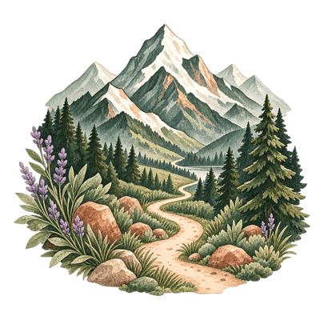
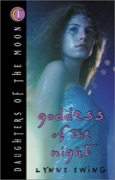
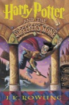
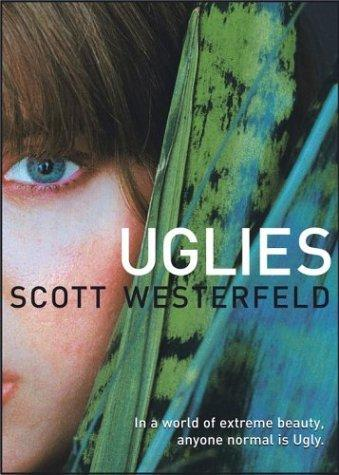
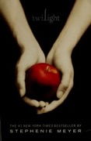
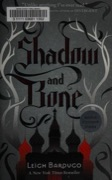
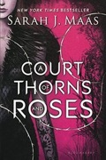
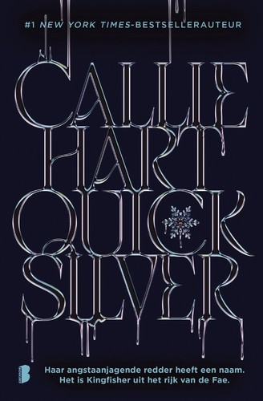

Give me a world I can get lost in, high stakes, dangerous people, slow-burn tension, and a story that keeps me up way too late. I’m a series binger, a lore goblin, and firmly team “just one more chapter” (famous last words).

Apparently I’ve wanted the same ingredients since I was twelve.

The bigger, the better.
Give me rules, limits, and lore.
Danger makes the story.
Slow burn is my love language.
Perfect people are boring.
She has goals. She gets things done.
I want to live in these worlds for a while.

A very messy timeline.
childhood

Daughters of the MoonLynne Ewing
Harry PotterJ.K. RowlingFirst worlds. Big feelings. Total obsession.
teen / ya

UgliesScott Westerfeld
The Twilight SagaStephenie Meyer The Hunger GamesSuzanne Collins The Mortal InstrumentsCassandra Clare The Infernal DevicesCassandra Clare Caster ChroniclesGarcia & Stohl
Shadow and BoneLeigh BardugoMagic, rebellion, secret societies, and the start of many all-nighters.
adult romance enters the chat
Well. This was a moment.
romantasy resurgence

A Court of Thorns and RosesSarah J. MaasThe gateway drug. Helped me fall back in love with fantasy.
ACOTAR absolutely helped shove me down the romantasy rabbit hole. I also think Sarah J. Maas is wildly overrated as a writer. Both things can be true.

Authors and books I can’t get enough of right now.

QuicksilverCallie HartFae & Alchemy

thanks for being here ♡